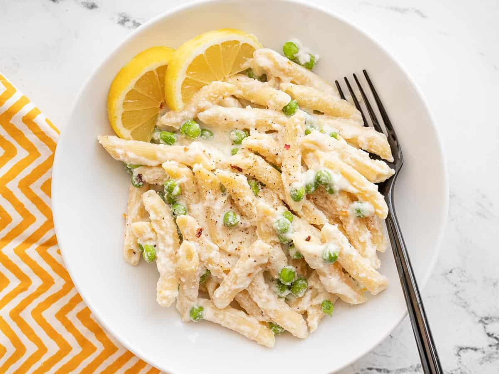

Lemon Ricotta Pasta

Description
This Lemon Ricotta Pasta is super fast, light, and fresh, which makes it perfect for an easy
weeknight dinner during the summer. The bright lemon flavor perfectly compliments the light
and creamy ricotta, and the little pops of sweetness from the peas make every bite a little more interesting.
Ingredients
- 16 oz penne pasta
- 1 cup ricotta cheese
- 1 cup frozen peas
- 1/4 cup grated Parmesano Reggiano cheese
- 1 lemon
- 2 cloves garlic, chopped
- 1 tbsp butter
- Salt, black pepper, red pepper flakes to taste
Steps
- Zest and juice lemon
- Place frozen peas in a colander in the sink
- Cook pasta according to package directions, drain in colander
- Melt butter in the pot and add chopped garlic, cook until golden brown
- Add pasta and peas back to the pot, along with ricotta, parmesan, and lemon juice/zest
- Generously season with salt, pepper, red pepper flakes, stir to combine